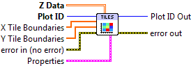
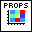

Tile Plot¶
Display a 2D array as a series of colored tiles.
Supply a 2D array of data; it will be displayed as a series of rectangles (tiles) colored according to a colormap. The tile boundaries along X and Y may optionally be specified. This VI differs from View Array in that the tiles appear as discrete units, with no smoothing applied. It is the same approach as used with 2D Histogram Plot.
By default, no lines are shown between tiles. This may be adjusted via the Line entry in the property cluster.
- Plot ID/Plot ID Out
- Plot identifier. Plot ID Out always contains the same value as Plot ID.
- Z Data
- 2D data to display.
- X Tile Boundaries
- Optional locations of the tile edge locations. Note that if Z Data has NX elements in the X direction, this array should have NX+1 elements. Defaults to 0..NX.
- Y Tile Boundaries
- Optional locations of the tile edge locations. Note that if Z Data has NY elements in the Y direction, this array should have NY+1 elements. Defaults to 0..NY.
-  Properties
Property cluster, available under the “Properties” subpalette.
- Colormap
Controls the colormap used to color the tiles.
- Map
- Colormap to use. See Colormaps for more info.
- Value Min
- Lower range for colormapped data; values smaller than this will all be plotted with the first color in the colormap.
- Value Max
- Upper range for colormapped data; values larger than this will all be plotted with the last color in the colormap.
- Scaling
- Colormap scaling mode. Currently only linear scaling is supported.
- Reverse
- Flip the colormap; for example, if a map has 0.0 as black and 1.0 as white, this will assign 0.0 as white and 1.0 as black.
- Line
Controls the appearance of the lines between tiles. Note: only “Automatic” and “Solid” styles are currently supported; other styles will be ignored.
- Style
- Line style (solid, dashed, etc.). Default is to automatically select an appropriate style.
- Color
- Line color. May be a PlotColor or LabView color.
- Width
- Line width, in font points (1/72 inch).
- Display
Controls general appearance of the tile plot.
- Alpha
- Alpha blending value for this object (0.0 to 1.0). Default is 1.0 (fully opaque).
- Z Order
- Stacking order. Default is chosen based on the object type.
- Error In/Out
- Terminals for standard error functionality.
Example¶
Download Tile Plot.vi,
or see Examples for a complete list of examples.
Axis Types¶
This VI supports rectangular axes. Use with polar axes will result in 402905 - Operation Not Supported for Polar Plot.
Errors¶
Other information¶
If Z Data is empty, no plot is made.
If either X Tile Boundaries or Y Tile Boundaries has less than two entries, or contains non-finite entries (NaN or Inf), it will be ignored and the defaults (0..NX and 0..NY) will be used.